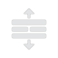

لإنشاء مشروع.
لإنشاء مشروع. . لإنشاء مشروع..
. لإنشاء مشروع..يمكن إيجاد مقاطع الفيديو المُصدرة في مجلد "تصدير" الخاص بالجهاز (في KineMaster/تصدير/).
عند فتح KineMaster لأول مرة، يتم الآن عرض المشاريع الموجودة في قائمة يمكن تمريرها لأعلى وأسفل.
يتم ترتيب القائمة بوضع المشاريع التي حُررت مؤخرًا في الأعلى؛ لفرز القائمة حسب الترتيب الأبجدي، كما كان في الإصدارات السابقة لـKineMaster، يمكنك تغيير ترتيب الفرز في الإعدادات.
لتشغيل ، أو مشاركة
، أو مشاركة ، أو تحرير
، أو تحرير  ، أو حذف
، أو حذف مشروع، انقر على الصورة المصغرة للمشروع لفتح تفاصيل وخيارات المشروع.
مشروع، انقر على الصورة المصغرة للمشروع لفتح تفاصيل وخيارات المشروع.

عند تحرير مشروع، ستظهر أزرار تراجع  أو إعادة
أو إعادة التعديلات, وتغيير السمة
التعديلات, وتغيير السمة  الآن على يسار شاشة معاينة الفيديو.
الآن على يسار شاشة معاينة الفيديو.  يكون متاحًا أيضًا حتى يمكن الآن مشاركة المشروعات مباشرة بمجرد انتهاء التحرير.
يكون متاحًا أيضًا حتى يمكن الآن مشاركة المشروعات مباشرة بمجرد انتهاء التحرير.
انقر  لتغيير إعدادات المشروع.
لتغيير إعدادات المشروع.

على يمين معاينة الفيديو، لا تزال أزرار إضافة وسائط  ومقاطع صوتية
ومقاطع صوتية  متاحة، ولكن يمكن الآن تسجيل السرد مباشرة باستخدام الصوت
متاحة، ولكن يمكن الآن تسجيل السرد مباشرة باستخدام الصوت  . انقر
. انقر  لالتقاط صور بالكاميرا أو تسجيل فيديو جديد بكاميرا الفيديو.
لالتقاط صور بالكاميرا أو تسجيل فيديو جديد بكاميرا الفيديو.
لإضافة لاصق أو كتابة يدوية إلى المشروع الآن، اضف طبقة للمشروع بالنقر على .
.
يمكن توسيع المخطط الزمني بالنقر على  بدلاً من التمرير لأعلى، و  ينقل رأس التشغيل سريعًا إلى بدء المشروع الآن.
ينقل رأس التشغيل سريعًا إلى بدء المشروع الآن.
لحذف مقطع الآن، انقر عليه ثم انقر على  إلى يسار معاينة الفيديو.
إلى يسار معاينة الفيديو.
لا يزال النقر على المقطع يعرض خيارات تحرير التأثيرات ولكنها تظهر كقائمة ممتدة إلى يمين معاينة الفيديو

لالتقاط إطار من مقطع كصورة، انقر  على اليسار لخيارات الالتقاط ولكن لتقسيم وإدخال إطار تجميد الآن، افتح قائمة اقتطاع/تقسيم على اليمين. قم الآن بمشاركة مشروع مباشرة من شاشة التحرير، فضلاً عن تفاصيل المشروع، بالنقر على
على اليسار لخيارات الالتقاط ولكن لتقسيم وإدخال إطار تجميد الآن، افتح قائمة اقتطاع/تقسيم على اليمين. قم الآن بمشاركة مشروع مباشرة من شاشة التحرير، فضلاً عن تفاصيل المشروع، بالنقر على  . اختر وجهة المشاركة أولاً ثم اختر مستوى الجودة. اختر اشتراك إن شئت بعد اختيار مكان المشاركة.
. اختر وجهة المشاركة أولاً ثم اختر مستوى الجودة. اختر اشتراك إن شئت بعد اختيار مكان المشاركة.